This document covers the development workflow, build processes, and deployment configuration for the signals trading platform. It explains how the multi-application architecture is built, packaged, and deployed using Docker containers with PM2 process management.
For information about the individual frontend applications, see Frontend Applications. For details about the backend server configuration, see Web Server and Error Handling.
The platform uses a multi-stage build system that handles both the main backend application and multiple frontend React applications. The build process is orchestrated through platform-specific scripts and consolidated using a TypeScript-based artifact copying system.

The build system supports both Windows and Linux platforms through dedicated scripts. The Windows build process is handled by scripts/win/build.bat:1-15, while Linux builds use scripts/linux/build.sh:1-15. Both scripts follow the same pattern: install dependencies for the root project, build the backend, then iterate through each application directory to install dependencies and build individual apps.
The copy-build.ts script consolidates all build artifacts into a unified build/ directory structure. The consolidation process uses the createCopy function to handle both apps and modules directories, copying build outputs, package.json files, and TypeScript definitions.

The script performs cleanup by removing existing build/apps and build/public directories before copying fresh artifacts. Key files copied include build outputs, package.json dependencies, TypeScript definitions, the PM2 ecosystem configuration, and static public assets.
Each frontend application uses Vite as the build tool with consistent configuration patterns. The applications share common plugins and build settings while maintaining individual proxy configurations for development.

The chat application proxies WebSocket connections to /session endpoint apps/chat-app/vite.config.mts:54-61, while the signal application proxies API calls to /status endpoint apps/signal-app/vite.config.mts:54-59.
Each frontend application is configured with specific proxy rules to communicate with the backend server running on port 30050:
| Application | Proxy Path | Target | WebSocket Support |
|---|---|---|---|
| chat-app | /session |
http://localhost:30050 |
Yes |
| signal-app | /status |
http://localhost:30050 |
No |
The proxy configuration enables seamless development by forwarding API requests and WebSocket connections to the backend server while serving the frontend from Vite's development server.
The application is containerized using a Node.js Alpine-based Docker image with minimal dependencies. The Docker configuration focuses on lightweight deployment with health checking capabilities.

The .dockerignore file excludes development directories like src, test, scripts, and apps from the Docker context .dockerignore:1-10, ensuring only production artifacts are included in the container image.
The application uses PM2 for process management in production, configured through ecosystem.config.js. The PM2 configuration defines a single application instance with automatic restart, memory limits, and log management.

The PM2 configuration includes daily automatic restarts at midnight, memory limit of 4096MB, and structured logging with merged logs and timestamp formatting config/ecosystem.config.js:13-27.
The deployment process includes Docker image building and publishing through platform-specific scripts. Both Windows and Linux environments support automated Docker image creation and registry publishing.

The publishing scripts build the Docker image with tag tripolskypetr/signal-app and push it to the Docker registry scripts/win/publish.bat:2-3, scripts/linux/publish.sh:2-3.
The PM2 ecosystem configuration reads environment variables from either a .env file or the system environment. The readConfig function uses a singleton pattern to load configuration once and cache it config/ecosystem.config.js:6-11.
The application runs on port 30050 based on the proxy configurations in the frontend applications, with WebSocket support for real-time agent communications and API endpoints for trading operations.